scratch
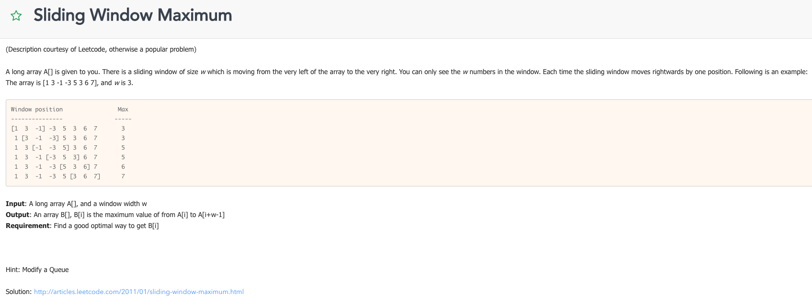


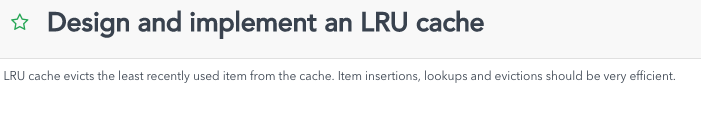


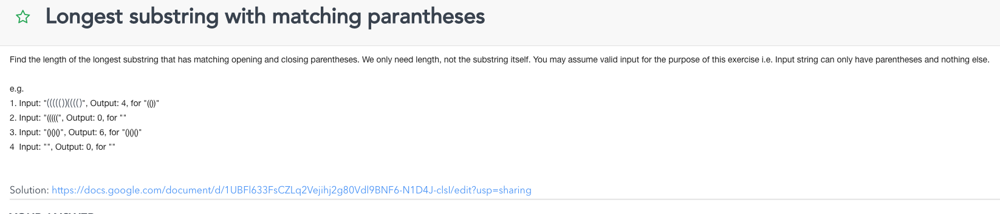


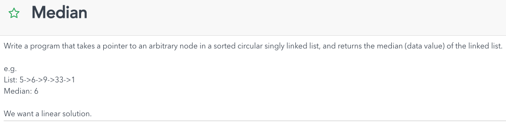

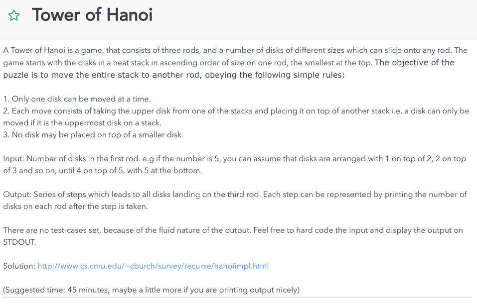


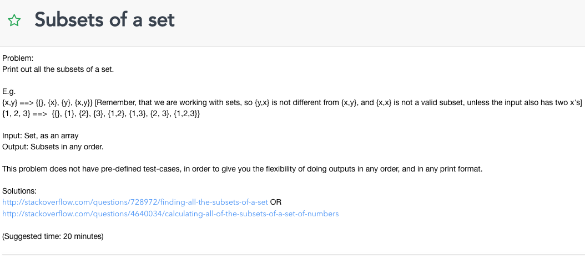
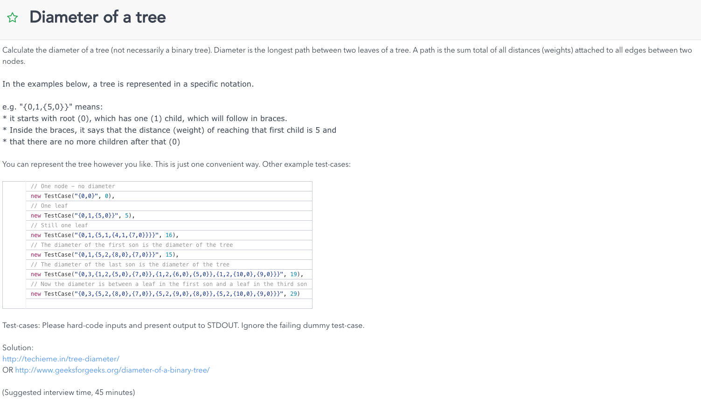

Check %2 to halve amount of computation

Let f(n) be the # of binary trees for n nodes
Therefore, f(0) = 1, f(1) = 1, f(2) = 2
Number of binary trees is the sum of possible (left subtrees of size i, and
right subtress of size (n-1-i)
Basically a summation of n for j = 0l where (n-j-1) * j

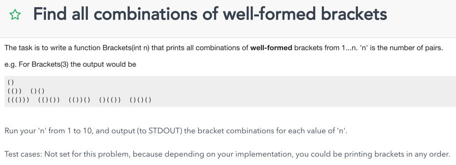
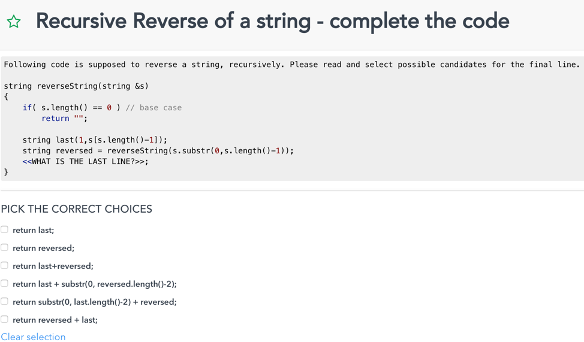
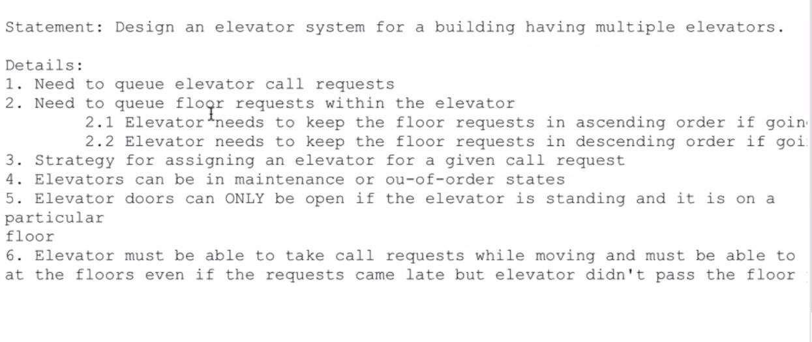


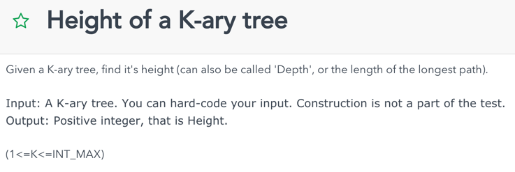


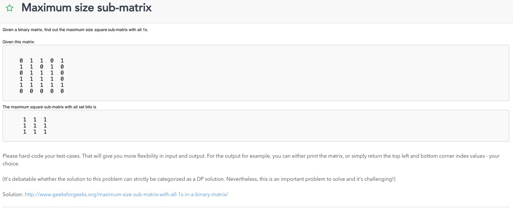


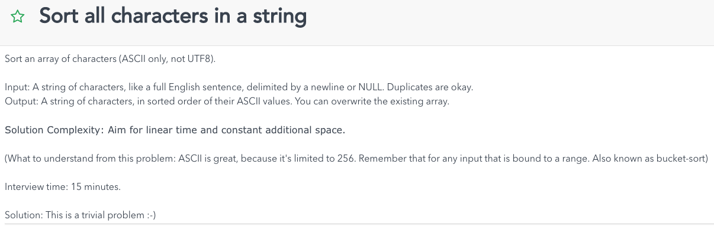

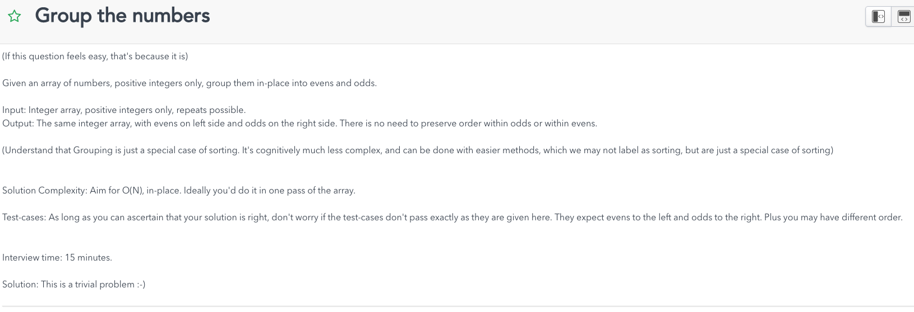


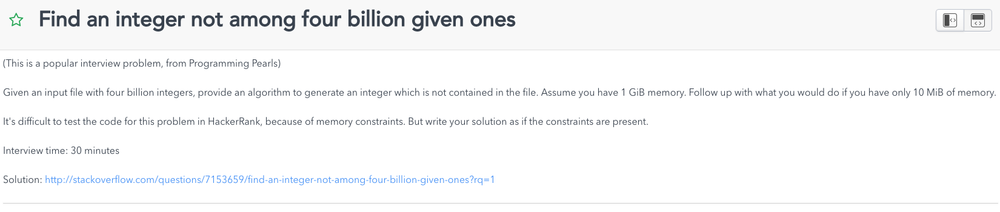

ANS


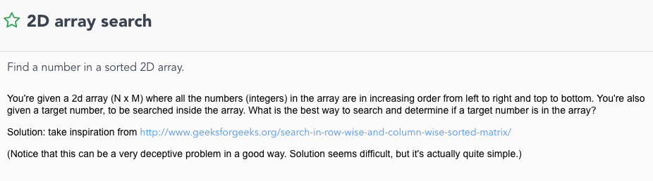


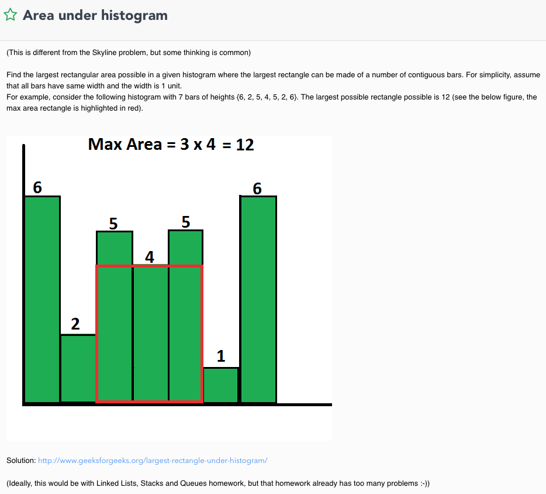


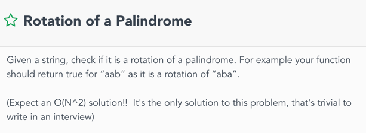
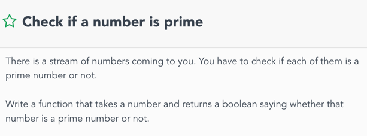


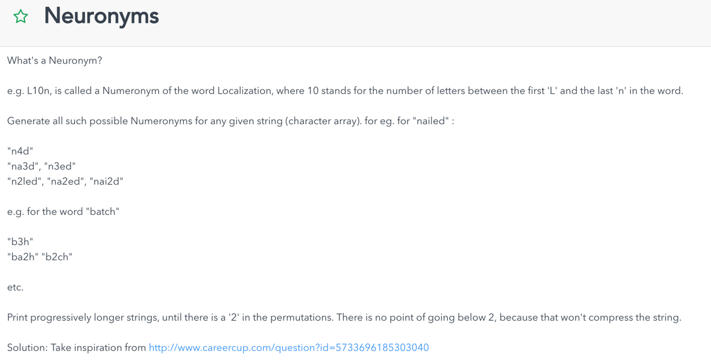


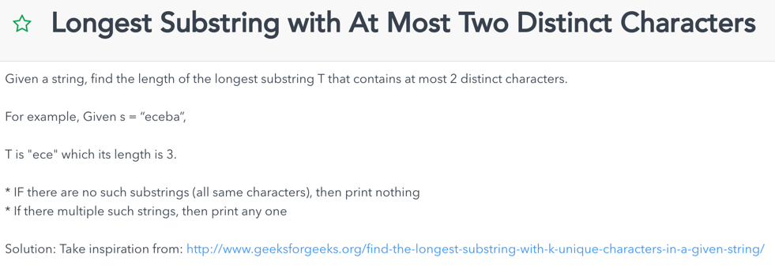
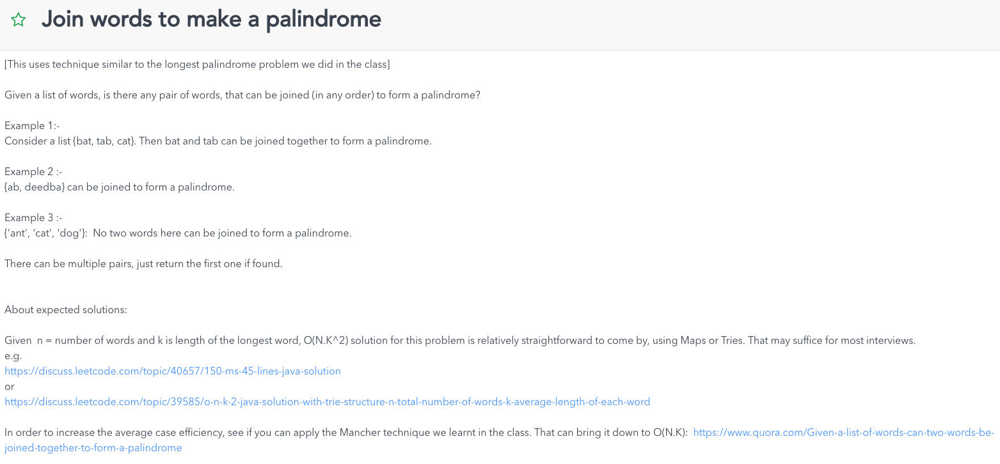


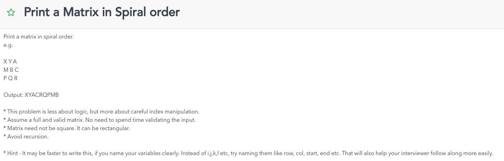
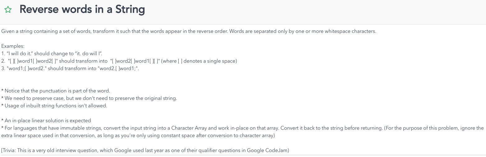

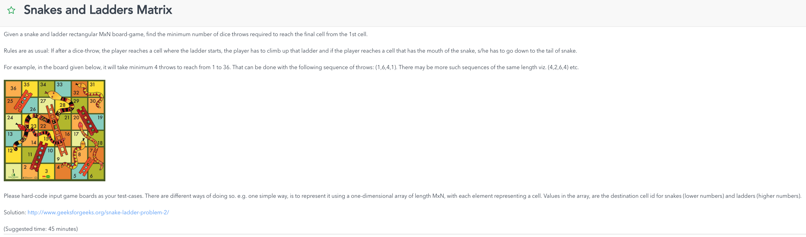


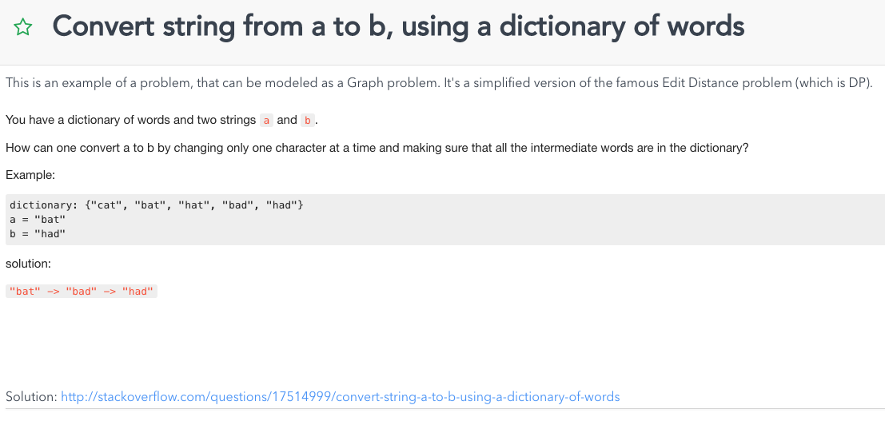


Smallest Substring of All Characters
Given an array with unique characters arr and a string str, find the smallest substring of str containing all characters of arr.
Example:
arr: [x,y,z], str: xyyzyzyx
result: zyx
Implement your solution and analyze the runtime complexity
Hints & Tips
If your peer is stuck, ask how can we determine if a given substring is valid (all chars from set are in it) and then ask how to apply that to a solution
If your peer is using a naive solution of checking all possible substrings, try to ask how can you avoid duplicate work
Make sure proper initializations are made
Watch for unnecessary variables and steps
For other solutions, make sure that any permutation of the characters in set can be found by the algorithm
make sure your peer understand why we should increase tail only after head is increased
Solution
We iterate the string from left to right, while using two indices - tailIndex and h.
At each iteration step, we examine the temp substring [str.charAt(tailIndex), str.charAt(tailIndex+1) , str.charAt(h)] and keep a copy of the shortest vaild substring weve seen so far.
To examine substrings we use 2 counters:
uniqueCounter (integer) - number of unique characters of arr in our temp substring
countMap (map/object/associative array - depends of your language of choice) - number of occurrences of each char from arr in our substring
function getShortestUniqueSubstring(arr, str):
t = 0
result = null
uniqueCounter = 0
countMap = new Map()
for i from 0 to length(arr)-1:
countMap.setValueOf(arr[i], 0)
for h from 0 to length(str)-1:
# handle the new head
head = str.charAt(h)
if countMap.keyExists(head) == false:
continue
headCount = countMap.getValueOf(head)
if headCount == 0:
uniqueCounter = uniqueCounter + 1
countMap.setValueOf(head, headCount + 1)
# push tail forward
while uniqueCounter == length(arr):
tempLength = h - t + 1
if tempLength == arr.length:
return str.substring(t, h)
if (!result or tempLength < length(result)):
result = str.substring(t, h)
tail = str.charAt(t)
if countMap.keyExists(tail):
tailCount = countMap.getValueOf(tail) - 1
if tailCount == 0:
uniqueCounter = uniqueCounter - 1
countMap.setValueFor(tail, tailCount)
t = t + 1
return result
Runtime Complexity: were doing a linear iteration of both str and arr of lengths n and m respectively, so the runtime complexity is a linear O(n+m).
Space Complexity: depends of your implementation for the mapping, but generally: were using countMap with m keys (the length of arr) plus few constant size counters - O(m) space complexity.
The Award Budget Cuts Problem
The awards committee had planned to give n research grants this year, out of a its total yearly budget.
However, the budget was reduced to b dollars. The committee members has decided to affect the minimal number of highest grants, by applying a maximum cap c on all grants: every grant that was planned to be higher than c will now be c dollars.
Help the committee to choose the right value of c that would make the total sum of grants equal to the new budget.
Given an array of grants g and a new budget b, explain and code an efficient method to find the cap c. Assume that each grant is unique.
Analyze the time and space complexity of your solution.
K-Messed Array Sort
Given an array arr of length n where each element is at most k places away from its sorted position,
Plan and code an efficient algorithm to sort arr.
Analyze the runtime and space complexity of your solution.
Example: n=10, k=2. The element belonging to index 6 in the sorted array, may be at indices 4, 5, 6, 7 or 8 on the given array.
Hints & Tips
Try to help your peer think about the advantages of this nearly k-sorted array. Then ask how can it be useful.
As a hint ask your peer, for the 0-index place on the array, how far can the item that belongs there be, and how can that be generalized (building the iterative step).
This question is a good opprtunity to check if your peer remebers what are insertion sort and heap sort, and for you both to brush up on that. A good source to get that covered is Sorting Algorithm article on Wikipedia.
If your peer does not know about insertion sort or heap sort, make sure his knowledge section on the interview feedback reflect that
To get the best feedback rating on the problem solving section your peer should plan, explain and execute an O(n log k) solution
If min-heap doesnt exist on the interviews coding language let your use a min-heap object as if it exists:
Valid operations are new MinHeap(), extractMin() and insert()
Watch for correct calculations and usage of array indices
If your peer is completely stuck, help the thought process by asking what can you do with a sliding window of size k+1
If relevant data structures (heap or others used by your peer) dont exist in your language of choice, you can assume their existence once your peer explain their concepts and operations and you both agree on its API.
Solution
The suboptimal approach to solve is by using Insertion Sort:
We iterate the arr from left to right:
On each iteration we bring arr[i] to its place in the subarray arr[0,1,2 i], by shifting any subarray elements that are bigger than A[i] one place right.
function insertionSort(arr):
for i from 1 to arr.length-1:
x = arr[i]
j = i-1
while (j >= 0 and arr[j] > x):
arr[j+1] = arr[j]
j
arr[j+1] = x
return arr
Runtime complexity: iteration over array of length n and switching at most k pairs for each iteration (by definition of the given array), takes O(n k).
If k is constant and relatively small we can argue that its actually close to a linear O(n) case.
Space complexity: constant O(1), all we need is 2 indices.
However, we can do better:
If we use a modified Heap Sort we can get better runtime complexity:
We define a virtual sliding window of from the first k+1 elements of arr.
First we build a min heap from the elements in the window.
Then, we start sliding: on each step we extract the minimum from the heap, move the window one place right, place the min weve extracted into index that is now left to the window and insert the new element at the end of the window to the heap. We repeat that until the window reaches the end of the array, then we extract the minimum from the heap and place it on the next index of arr, until the heap is empty.
function kHeapSort(arr, k)
h = new MinHeap()
n = length(arr)
for i from 0 to k:
h.insert(arr[i])
for i from k+1 to n-1:
arr[i-(k+1)] = h.extractMin()
h.insert(arr[i])
for i from 0 to k:
arr[n-k-1 + i] = h.extractMin()
return arr
Runtime complexity:
Building a heap takes linear O(k) for k+1 elements.
Operating the heap later involves extracting min on a min-heap / inserting to the heap. These actions take O(log k) each. We do at least one of these actions n times, so the cost here is O(n log k).
the overall runtime complexity of the heap solution is O(n log k). again, if k is constant, we may argue the complexity is close to linear.
Space complexity:
we need to hold a min heap of k+1 elements.
Since a heap is usually implemented with an array the space complexity is O(k+1).
However, we can implement and maintain the heap manually on our conceptual sliding window subarray. If we handled right, it can lead us to a constant O(1) space complexity.
The Quad Combination Problem
Given an array of numbers arr and a number S, find 4 different numbers in arr that sum up to S.
Write a function that gets arr and S and returns an array with 4 indices of such numbers in arr, or null if no such combination exists.
Explain and code the most efficient solution possible, and analyze its runtime and space complexity.
Solution
The naive solution is to iterate on every possible combination of 4 numbers from arr until the required combination if found. Using 4 nested loop involves O(n4) time complexity and O(1) space complexity. This is quite inefficient.
We can do better, if we look at all the pairs in arr, and then try to build the sum S from 2 different pairs.
First, we iterate over all the possible pairs in arr with 2 nested loops and hash each pair by its sum. Then, for each pairSum in the pairs hash table, we look for its complement S - pairSum. When we find two pairs that sum up to S, we need to check that these pairs are drawn from 4 different indices in arr (in other words: that no number is used twice to reach the desired sum).
function findArrayQuadCombination(arr, S):
if (arr == null OR S == null):
return null
n = length(arr)
if (n < 4):
return null
pairHash = new HashTable()
for i from 0 to n-1
for j from i+1 to n-1
if !pairHash.isMapped(arr[i]+arr[j]):
pairHash.map(arr[i]+arr[j], [])
pairHash.get(arr[i]+arr[j]).push([i, j])
for pairSum in pairHash.getKeys()
if pairHash.isMapped(S - pairSum):
pairsA = pairHash.get(pairSum)
pairsB = pairHash.get(S - pairsSum)
combination = find4Uniques(pairsA, pairsB)
if (combination != null):
return combination
return null
function find4Uniques(A, B):
lenA = length(A)
lenB = length(B)
for i from 0 to lenA-1:
for j from 0 to lenB-1:
if ( A[i][0] == B[j][0] OR A[i][1] == B[j][1] OR
A[i][0] == B[j][1] OR A[i][1] == B[j][0] ):
continue
else:
return [A[i][0], A[i][1], B[j][0], B[j][1]]
return null
Time Complexity: Let n be the length or arr. Hashing all pairs in arr by their sum and iterating over all sums and their complements takes O(n2) time (n2 pairs and constant number of actions for each). Uniqueness check for all indices of the pairs of sums that adds up to S until a valid combination is found, is also O(n2) (checking at most n2 pairs with 4 comparisons for each). Overall: quadratic O(n2) time complexity.
function findComplementingWeights(arr, limit):
h = new hashTable()
for (index, w) in arr:
complementIndex = h.findKey(limit - w)
if (complementIndex != null):
return [index, complementIndex]
else:
h.insert(w, index)
return -1
class Pramp {
static void print(int[][] M) {
printHelper(M, M[0].length, M.length, 0, 0);
}
static void printHelper(int[][] M, int n, int m, int row, int col) {
}
public static void main(String[] args) {
String pramp = "Practice Makes Perfect";
System.out.println(pramp);
}
}*/
islands question
arrays question
The Word Count Engine Problem
Implement a document scanning engine that receives a text document doc and returns a list of all unique words in it and their number of occurrences, sorted by the number of occurrences in descending order.
Example:
for doc: practice makes perfect. get perfect by practice. just practice!
the engine returns the list: { practice: 3, perfect: 2, makes: 1, get: 1, by: 1, just: 1 }.
The engine should ignore punctuation and white-spaces.
Find the minimal runtime complexity and analyze it.
static class Result {
String word;
int count;
public Result(String word, int count) {
this.word = word;
this.count = count
}
}
static List
List
Map<String, Integer> textToCount = new HashMap<>();
TreeMap<Integer, List
for (String word : doc) {
if (!textToCount.containsKey(word)) {
textToCount.put(word, 0);
}
}
// Output
Set
for (Integer count : reverseMap.descendingKeySet()) {
List
for (String word : words) {
if (!printed.contains(word)) {
result.add(new Result(word, count));
printed.add(word);
}
}
}
return result;
}
The Busiest Time in The Mall Problem
The mall management is trying to figure out what was the busiest moment in the mall in the last year.
You are given data from the door detectors: each data entry includes a timestamp (seconds in Unix Epoch format), an amount of people and whether they entered or exited.
Example of a data entry:
{ time: 1440084737, count: 4, type: enter }
Find what was the busiest period in the mall on the last year. Return an array with two Epoch timestamps representing the beginning and end of that period. You may assume that the data your are given is accurate and that each second with entries or exits is recorded. Implement the most efficient solution possible and analyze its time and space complexity.
The BST Successor Search Problem
Given a node n in a binary search tree, explain and code the most efficient way to find the successor of n.
Analyze the runtime complexity of your solution.
Dictionary print thing
Given a node n in a binary search tree, explain and code the most efficient way to find the successor of n.
Analyze the runtime complexity of your solution.
pacific, atlantic, dfs
Given BST and a target value. Count the number of pairs of values which sum to the target value.
Given BST and a target value. Count the number of pairs of values which sum to the target value.
Ex: 0
-2 4
-2 4 5
-3 6
11
target = 4
output: 2 (0,4) (6,-2)
// n is # nodes
// For each node in tree: O(n)
// val = node.val
// Find if target - val exists O(logn)
// Final dedup step, O(n)
// Runtime : O(nlogn)
// Space: O(n^2) due to no dedup
// Traverse tree once, both ends
// (-3, 11), t = 4,
// (-3, 11)
// Case 1: assuming no duplicates, move both pointers to sucessor and predecessor
// Case 2: val > targer, where val is sum of pointers
// Case 3:
// Recursive function that returns leftmost node, rightmost node in an LL
// Base case: single BST leaf node: {node, node}
//
static class Spine {
Node precursor;
Node successor;
}
Ex: 0
-2 4
-2 4 5
-3 6
11
static Spine convertBST(Node n) {
if (n == null) {
return null;
}
}
// Returns the head of the new LL
static Spine convertToLL(Node n) {
return convertBST(n); // head and tail of LL
}
l r
-3 -2 -2 0 4 5 6 11
-4
target = 8
-3, 11, val = 8, count = 1
-2, 6, val = 4, count = 1,
-2, 6, val = 4, count = 1,
0, 6, val = 6, count = 1,
4, 6, val = 10, count = 1,
4, 5, val = 9, count = 1,
4, 4, val = 8, count = 2,
static int countPairs(Node root, int target) {
if (root == null) {
throw new IllegalArgumentException();
}
}
static String[] {Deque<Interval> curr = new LinkedList<>();List<List<String>> results = new LinkedList<>();;List<String> result = new LinkedList<>();for (List<String> l : results) {Iterator<String> it = l;StringBuilder builder = new StringBuilder();while(it) {builder;if (it) {builder;}}result;}return result;}